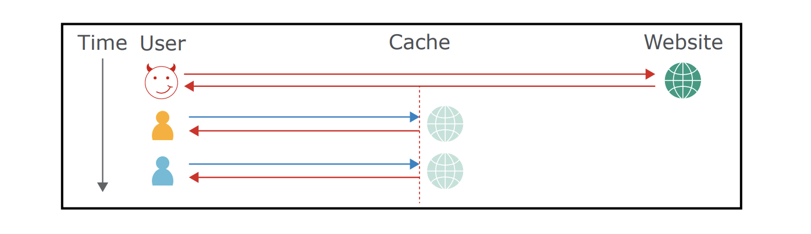

Web缓存欺骗和Web缓存投毒是一种新的Web攻击向量，它使得多种Web缓存技术(如CDN、负载均衡器、反向代理)和框架都面临风险。两者都利用了web缓存，但在利用方式上有着不同。
Web缓存欺骗
在存在web缓存的情况下，通过”欺骗”用户访问一个不存在的静态页面，从而使敏感页面保存在缓存中，从而当攻击者再次访问此不存在的静态页面，就能从缓存中获取到用户的敏感信息。
前提
- web缓存功能设置为通过url的扩展名来判断是否缓存文件，且忽略任何缓存头(服务器端返回的响应中没有no-store指令或可被绕过)。
- 使用rewrite、pathinfo类似的模式，当访问/xxx.php/non-existen.css时，返回/xxx.php的内容。
- “欺骗”用户点击时，用户需要认证状态。
web缓存实例
1. Cloudflare
当来自web服务器的文件到达Cloudflare时。文件会进行两阶段处理。
- 检查目标站点、文件来源目录是否设置了缓存功能。
- 检查是否以特定的静态扩展名结尾。
class, css, jar, js, jpg, jpeg, gif, ico, png, bmp, pict, csv, doc, docx, xls, xlsx, ps, pdf, pls, ppt, pptx, tif, tiff, ttf, otf, webp, woff, woff2, svg, svgz, eot, eps, ejs, swf, torrent, midi, mid。 - 检查HTTP缓存头部是否存在。实际中cloudflare存在”边缘缓存过期TTL”的功能，这个功能可以用来覆盖任何已有的头部信息。当该功能
2. NGINX
作为负载均衡服务器，NGINX也可以提供缓存功能，来缓存从web服务器返回的页面。通过NGINX配置文件设置缓存规则，若配置的忽略头部中包含Cache-Control，则会忽略文件的缓存头部。
3. IIS ARR
ARR(Application Request Routing,应用程序请求路由)模块可以为IIS带来负载均衡功能。IIS ARR中存在可以忽略文件的缓存头部的选项，导致即使服务器设置了no-store也无济于事。
漏洞挖掘
- 确定是否架设了CDN、负载均衡器、反向代理等缓存设备。
- 观察响应头是否设置
Cache Control: no-cache,max-age=0,private, no-store。 - web-cache-deception-checker
缓解措施
- 严格配置缓存策略，只有当文件的HTTP缓存头部允许缓存时，才会缓存文件。
- 在处理不存在资源时，返回404/302，而不是返回上一级的内容。
- 设置
Vary:Cookie根据Cookie设置缓存，不同cookie的用户缓存页面不相同。
web缓存投毒
Web缓存投毒在以前一直是一个难以琢磨的漏洞，是一种理论上但实际难以利用的问题。在2018年BlackHat上，提出了实战的几个例子，证明了器危害和可利用性。
web缓存投毒(Web Cache Poisonning)的攻击方式是使得缓存机制缓存了有害的页面，当正常用户命中该缓存时，就会被有害页面攻击。
它的整个过程如下图所示:

那么如何使得缓存机制缓存有害的页面？在这里先介绍一个Vary响应头，MDN解释它决定了对于未来的一个请求头，应该用一个缓存的回复还是向源服务器请求一个新的回复。举例Vary:User-Agent时，会根据User-Agent的值来返回缓存，以防移动端获取了PC端的缓存。这里的User-Agent成为了缓存键。
案例
如存在一个页面它存在self XSS，比如。
1 | <!doctype html> |
它接收攻击者可控的Host头直接输出在页面上，且攻击者无法控制用户的HTTP头，从而是一个self XSS。于是攻击者发送如下的请求
1 | GET / HTTP/1.1 |
将有害的页面存储下来了，那么其他用户访问这同意资源时，就会触发XSS漏洞，通过缓存投毒，一个self xss就转变为了存储型XSS了。